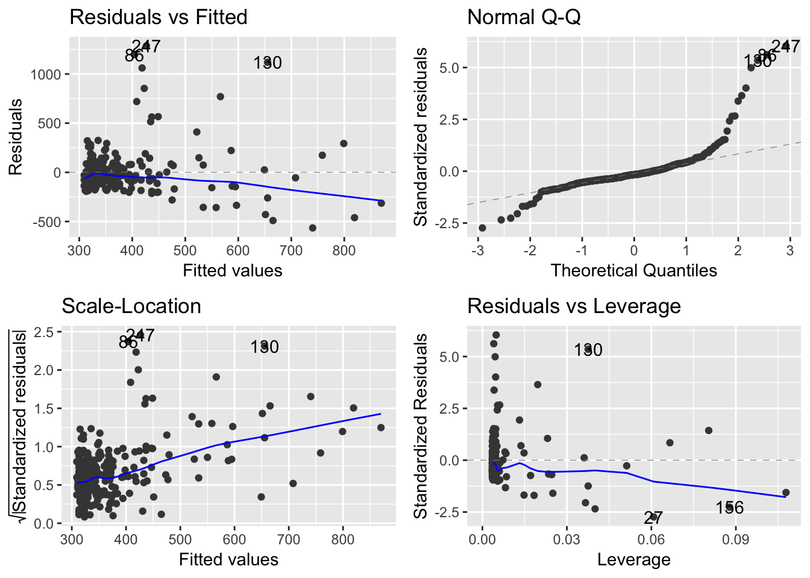
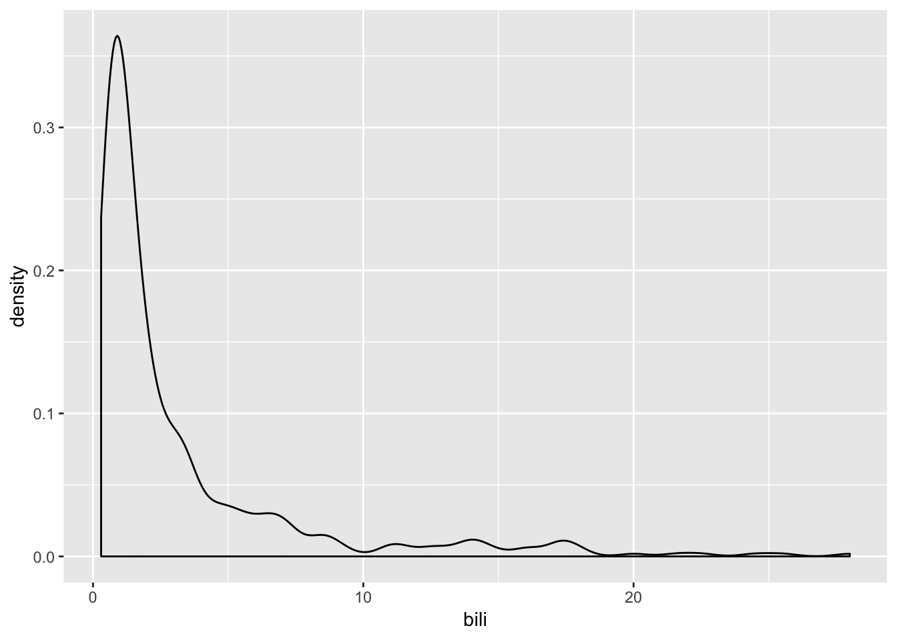
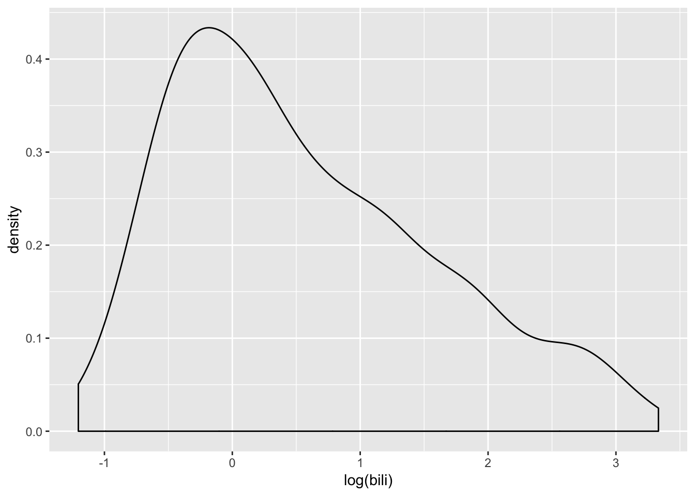
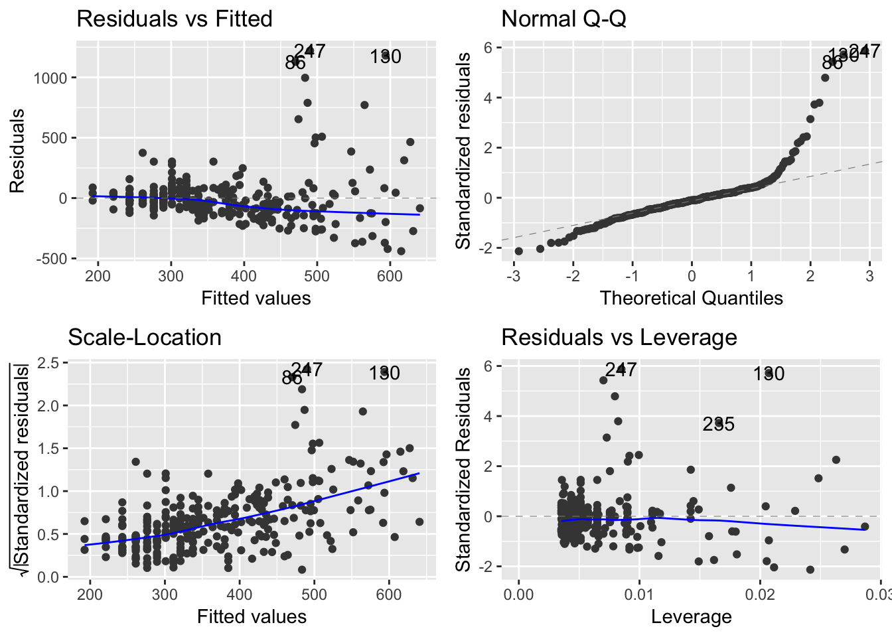

Chapter 11 Modeling
library(survival)
data(pbc)
str(pbc)'data.frame': 418 obs. of 20 variables:
$ id : int 1 2 3 4 5 6 7 8 9 10 ...
$ time : int 400 4500 1012 1925 1504 2503 1832 2466 2400 51 ...
$ status : int 2 0 2 2 1 2 0 2 2 2 ...
$ trt : int 1 1 1 1 2 2 2 2 1 2 ...
$ age : num 58.8 56.4 70.1 54.7 38.1 ...
$ sex : Factor w/ 2 levels "m","f": 2 2 1 2 2 2 2 2 2 2 ...
$ ascites : int 1 0 0 0 0 0 0 0 0 1 ...
$ hepato : int 1 1 0 1 1 1 1 0 0 0 ...
$ spiders : int 1 1 0 1 1 0 0 0 1 1 ...
$ edema : num 1 0 0.5 0.5 0 0 0 0 0 1 ...
$ bili : num 14.5 1.1 1.4 1.8 3.4 0.8 1 0.3 3.2 12.6 ...
$ chol : int 261 302 176 244 279 248 322 280 562 200 ...
$ albumin : num 2.6 4.14 3.48 2.54 3.53 3.98 4.09 4 3.08 2.74 ...
$ copper : int 156 54 210 64 143 50 52 52 79 140 ...
$ alk.phos: num 1718 7395 516 6122 671 ...
$ ast : num 137.9 113.5 96.1 60.6 113.2 ...
$ trig : int 172 88 55 92 72 63 213 189 88 143 ...
$ platelet: int 190 221 151 183 136 NA 204 373 251 302 ...
$ protime : num 12.2 10.6 12 10.3 10.9 11 9.7 11 11 11.5 ...
$ stage : int 4 3 4 4 3 3 3 3 2 4 ...myLinearModel <- lm(chol ~ bili, data = pbc)myLinearModel
Call:
lm(formula = chol ~ bili, data = pbc)
Coefficients:
(Intercept) bili
303.20 20.24 summary(myLinearModel)
Call:
lm(formula = chol ~ bili, data = pbc)
Residuals:
Min 1Q Median 3Q Max
-565.39 -89.90 -35.36 44.92 1285.33
Coefficients:
Estimate Std. Error t value Pr(>|t|)
(Intercept) 303.204 15.601 19.435 < 2e-16 ***
bili 20.240 2.785 7.267 3.63e-12 ***
---
Signif. codes: 0 '***' 0.001 '**' 0.01 '*' 0.05 '.' 0.1 ' ' 1
Residual standard error: 213.2 on 282 degrees of freedom
(134 observations deleted due to missingness)
Multiple R-squared: 0.1577, Adjusted R-squared: 0.1547
F-statistic: 52.8 on 1 and 282 DF, p-value: 3.628e-12broom::tidy(myLinearModel)# A tibble: 2 x 5
term estimate std.error statistic p.value
<chr> <dbl> <dbl> <dbl> <dbl>
1 (Intercept) 303. 15.6 19.4 5.65e-54
2 bili 20.2 2.79 7.27 3.63e-12broom::glance(myLinearModel)# A tibble: 1 x 11
r.squared adj.r.squared sigma statistic p.value df logLik AIC BIC
<dbl> <dbl> <dbl> <dbl> <dbl> <int> <dbl> <dbl> <dbl>
1 0.158 0.155 213. 52.8 3.63e-12 2 -1925. 3856. 3867.
# … with 2 more variables: deviance <dbl>, df.residual <int>## # install.packages('ggfortify')
## library(ggfortify)
## autoplot(myLinearModel)
## ggplot(pbc, aes(x = bili))+geom_density()
## ggplot(pbc, aes(x = log(bili)))+geom_density()
myLinearModel2 <- lm(chol~log(bili), data = pbc)
summary(myLinearModel2)
Call:
lm(formula = chol ~ log(bili), data = pbc)
Residuals:
Min 1Q Median 3Q Max
-440.07 -94.35 -21.07 42.67 1221.86
Coefficients:
Estimate Std. Error t value Pr(>|t|)
(Intercept) 311.48 14.28 21.816 < 2e-16 ***
log(bili) 98.80 12.07 8.186 9.42e-15 ***
---
Signif. codes: 0 '***' 0.001 '**' 0.01 '*' 0.05 '.' 0.1 ' ' 1
Residual standard error: 208.9 on 282 degrees of freedom
(134 observations deleted due to missingness)
Multiple R-squared: 0.192, Adjusted R-squared: 0.1891
F-statistic: 67.01 on 1 and 282 DF, p-value: 9.416e-15autoplot(myLinearModel2)
autoplot(myLinearModel2, which=1)
d <- broom::augment(myLinearModel2)
d# A tibble: 284 x 10
.rownames chol log.bili. .fitted .se.fit .resid .hat .sigma .cooksd
<chr> <int> <dbl> <dbl> <dbl> <dbl> <dbl> <dbl> <dbl>
1 1 261 2.67 576. 28.1 -315. 0.0181 208. 2.13e-2
2 2 302 0.0953 321. 13.7 -18.9 0.00433 209. 1.79e-5
3 3 176 0.336 345. 12.8 -169. 0.00373 209. 1.23e-3
4 4 244 0.588 370. 12.4 -126. 0.00352 209. 6.41e-4
5 5 279 1.22 432. 14.6 -153. 0.00487 209. 1.33e-3
6 6 248 -0.223 289. 15.8 -41.4 0.00571 209. 1.14e-4
7 7 322 0 311. 14.3 10.5 0.00467 209. 5.98e-6
8 8 280 -1.20 193. 24.9 87.5 0.0142 209. 1.28e-3
9 9 562 1.16 426. 14.2 136. 0.00463 209. 9.84e-4
10 10 200 2.53 562. 26.6 -362. 0.0162 208. 2.51e-2
# … with 274 more rows, and 1 more variable: .std.resid <dbl>ggplot(d, aes(x = .fitted, y = .resid))+geom_point()+ geom_smooth(se=F)+
labs(x = 'Fitted values', y = 'Residual values')
head(predict(myLinearModel2, newdata = pbc)) 1 2 3 4 5 6
575.6925 320.9006 344.7277 369.5578 432.3941 289.4371 myLM3 <- lm(chol ~ log(bili) + sex, data = pbc)
broom::tidy(myLM3)# A tibble: 3 x 5
term estimate std.error statistic p.value
<chr> <dbl> <dbl> <dbl> <dbl>
1 (Intercept) 283. 36.6 7.71 2.14e-13
2 log(bili) 99.6 12.1 8.22 7.37e-15
3 sexf 32.5 37.8 0.858 3.92e- 1myLR <- glm(spiders ~ albumin + bili + chol, data = pbc, family = binomial)
myLR
Call: glm(formula = spiders ~ albumin + bili + chol, family = binomial,
data = pbc)
Coefficients:
(Intercept) albumin bili chol
2.3326484 -0.9954927 0.0995915 -0.0003176
Degrees of Freedom: 283 Total (i.e. Null); 280 Residual
(134 observations deleted due to missingness)
Null Deviance: 341.4
Residual Deviance: 315.2 AIC: 323.2broom::tidy(myLR)# A tibble: 4 x 5
term estimate std.error statistic p.value
<chr> <dbl> <dbl> <dbl> <dbl>
1 (Intercept) 2.33 1.30 1.80 0.0717
2 albumin -0.995 0.362 -2.75 0.00595
3 bili 0.0996 0.0344 2.89 0.00381
4 chol -0.000318 0.000615 -0.517 0.605 broom::glance(myLR)# A tibble: 1 x 7
null.deviance df.null logLik AIC BIC deviance df.residual
<dbl> <int> <dbl> <dbl> <dbl> <dbl> <int>
1 341. 283 -158. 323. 338. 315. 280head(predict(myLR)) 1 2 3 4 5 6
1.10554163 -1.77506554 -1.04814132 -0.09414055 -0.93144911 -1.62851203 head(predict(myLR, type='response')) 1 2 3 4 5 6
0.7512970 0.1449135 0.2595822 0.4764822 0.2826308 0.1640343